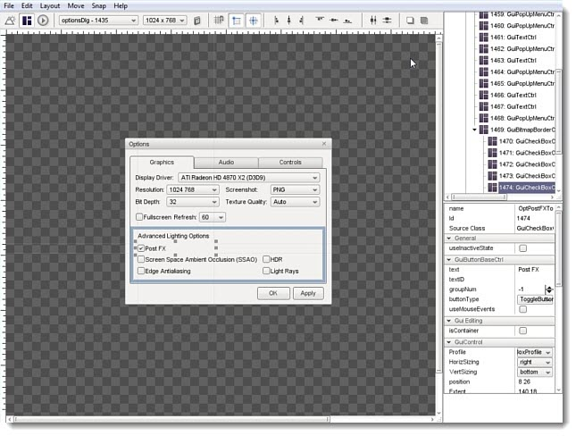

What is a GUI?
"GUI" stands for Graphical User Interface. It is the summation of
all the controls (windows, buttons, text fields, etc.) that are used to
interact with a game and its settings. Most interfaces in games
consist of buttons to launch or join a game session, editing devices to
change user preferences, options to change screen resolutions and
rendering options, and elements which display game data to the user as
they are playing.
GUI creation and design is extremely important to game development.
Many decent games have been crippled by inaccessible GUIs, which is why
having a built in GUI editor can be a blessing. The Torque 3D editor
provides drag and drop functionality, with minimal fill in the blank
requirements.
Torque 3D GUIs
GUIs are saved as a script (.gui), which allows you to further tweak
values using your favorite text editor. Additionally, you can declare
variables and define functions at the end of a GUI script, which will
not be written over when modifying the GUI using Torques editor.
Multiple controls which can be combined to make up
a single interface. Each control is contained in a single structure,
which can be embedded into other GUI elements to form a tree. The
following is an example of a GUI control which displays a picture:
// Bitmap GUI control
new GuiBitmapCtrl() {
profile = "GuiDefaultProfile";
horizSizing = "width";
vertSizing = "height";
position = "8 8";
extent = "384 24";
minExtent = "8 8";
visible = "1";
helpTag = "0";
bitmap = "art/gui/images/swarmer.png";
wrap = "0";
};
Once the above GUI is active in your interface, it will display the following:
GUI Editor
Torque 3D features a WYSIWYG GUI Editor, which allows you to create,
edit, and test your GUI in game with maximum fidelity. 90% of your GUI
creation can be done in the editor, leaving 10% for scripting
advanced functionality.
(click to enlarge)

Conclusion
As previously mentioned, the game interface is critical to its
success. The GUI Editor is a powerful tool you should become familiar
with early in your development. Before you begin experimenting, you
should continue reading and learn about the GUI Editor Interface.
|
{kind=link}